1 Introduction
1.1 Background of the Study
The rapid advancement of information technology has transformed the way organizations manage data and coordinate emergency responses, shifting from localized, paper-based protocols to highly integrated, intelligence-driven digital frameworks. Globally, the demand for robust emergency response solutions is surging, driven by rising natural disasters and the need for interconnected public safety networks. Consequently, the global incident and emergency management market is projected to grow substantially through 2030 (MarketsandMarkets, 2024). This global technological shift aligns with the United Nations' Sustainable Development Goals (SDGs), particularly SDG 3, which promotes good health and well-being; SDG 11, which advocates for sustainable, safe, and resilient cities; and SDG 16, which emphasizes the promotion of peace, justice, and effective, accountable institutions (United Nations, 2015).
In the Philippines, a significant digital divide hampers the modernization of grassroots emergency management. While the Department of Information and Communications Technology (DICT) has spearheaded the e-Government Masterplan (eGMP) 2022–2025 to connect local government units (DICT, 2024), recent data from the Philippine Statistics Authority (PSA) indicate that only approximately 44 percent of households currently have internet access (PSA, 2024). At the grassroots level, the barangay serves as the primary planning and implementing unit of government policies, acting as the immediate responder to localized crises. Despite this mandate, a vast majority of Philippine barangays continue to rely on manual, handwritten logbooks for their blotter and emergency dispatch systems. These manual processes are inefficient, susceptible to physical data loss, and pose data privacy risks under Republic Act No. 10173 (Data Privacy Act of 2012) due to the unmasked handling of sensitive citizen information (National Privacy Commission, 2012).
This operational bottleneck is evident in the Municipality of Pilar, a first-class coastal municipality in the province of Sorsogon with a population of 76,908 (PhilAtlas, 2024). The municipality is geographically vulnerable to severe weather disturbances, including the destructive impacts of recent typhoons and fires, which disrupt local communication lines. Within Pilar, the communities of Barangay Dao (population 2,485), Barangay Marifosque (population 2,473), Barangay Binanuahan (population 1,889), and Barangay Banuyo (population 3,809) exemplify the challenges of rural public safety administration. In these barangays, field responders (tanods) lack real-time geographical tracking and face communication breakdowns when terrestrial IP networks fail during calamities.
While several web-based barangay information systems currently exist in the local market, they predominantly function as static administrative repositories (Tosper et al., 2025). These existing solutions present operational limitations in rural contexts because they lack offline-first operational resilience, omit automated data masking for privacy compliance, and rely on continuous internet connectivity to maintain core dispatch workflows. This study proposes Baranguard: Barangay Intelligence and Emergency Dispatch System, an offline-first, local-server-based platform featuring an SMS best-effort fallback mechanism and the integration of the locally self-hosted Llama-SEA-LION-v3.5-8B-R small language model (SLM) to automate text summarization and PII redaction. By adapting AI capabilities for low-connectivity environments, Baranguard provides an offline-first operational framework for local emergency management while supporting compliance with applicable data privacy requirements under RA 10173 through automated draft PII redaction, role-based access controls, and mandatory administrative human review prior to public record storage.
1.2 Objectives of the Study
This study aimed to design and develop Baranguard, a local-server-based, offline-first barangay intelligence and emergency dispatch system tailored for Barangays Dao, Binanuahan, Marifosque, and Banuyo in Pilar, Sorsogon. Specifically, the study aimed: 1. To design a GIS-enabled web-based command center that centralizes incident
records, tracks responder locations in real-time, and generates historical incident
heatmaps. 2. To develop an offline-first mobile operations application for barangay tanods
capable of capturing incident details without internet access and synchronising
queued records to the barangay command centre server upon reconnection. 3. To implement an SMS best-effort fallback communication protocol that
automatically transmits emergency alerts and geolocation data from field
responders when broadband networks fail under partial-outage conditions. 4. To evaluate the system's technical quality, usability, and performance using the
ISO/IEC 25010:2023 software quality model.
1.3 Significance of the Study
Primary Beneficiaries. The direct users of the system, barangay tanods and dispatchers, will experience a modernized, efficient workflow. The offline-first mobile application improves their daily tasks by allowing them to log incidents locally via SQLite caching, consult pre-cached offline map tiles for geographic orientation, and communicate via automated SMS fallback during network outages. This is designed to reduce duplicated manual documentation effort and to shorten dispatch coordination time, the interval between an incident being received at the command centre and a responder confirming deployment. Emergency response time in the full sense, measured to a responder's physical arrival, is determined largely by road conditions and responder availability and is not claimed as an outcome of this study.
Administrators and Management. Local chief executives and barangay officials will benefit from enhanced, data-driven governance. The web-based command center provides historical heatmaps and statistical reports, enabling proactive decisions regarding resource deployment and patrol scheduling. Baranguard implements AI-assisted privacy processing with mandatory human validation: the language model produces a draft redaction, and the Barangay Secretary must explicitly review and approve that draft before a blotter record can be finalized. The Secretary, not the model, remains the authoritative decision-maker, consistent with the Secretary's statutory custody of barangay records under Section 394(c) of Republic Act No. 7160. This arrangement supports compliance with the Data Privacy Act of 2012 (RA 10173) while keeping accountability with a named human officer.
Future Researchers. The architectural framework of Baranguard serves as a pioneering reference for future IT capstone students and academic researchers. By demonstrating the practical deployment of an Agile Scrum framework, an offline-first mobile architecture with SQLite synchronization, and the local, on-premise integration of a Southeast Asian-optimized small language model (Llama-SEA-LION-v3.5-8B-R) in civic technology, this study contributes to the body of knowledge on resilient local e-governance systems.
Community and Society. The residents of Barangays Dao, Binanuahan, Marifosque, and Banuyo will benefit from a safer, more responsive community environment. The system supports SDG 3 (Good Health and Well-Being) by enabling faster emergency medical dispatch that reduces preventable injury and mortality in underserved coastal communities. It further supports SDG 11 (Sustainable Cities and Communities) and SDG 16 (Peace, Justice, and Strong Institutions), fostering greater social inclusion, transparent public service delivery, and elevated trust in local peacekeeping mechanisms (United Nations, 2015).
1.4 Scope and Delimitations
This study encompasses the development and deployment of a dual-platform incident management system, featuring an Android-based mobile application for field responders and a local network-based web application deployed on an administrative workstation for dispatchers. The system's core functionalities integrate a web-based command center equipped with GIS heatmaps, live dispatch tracking, and an AI-assisted electronic blotter. To ensure reliability in the field, the mobile application is designed with offline data caching and a three-state location behaviour: where the device has an active network path, GPS coordinates are transmitted to the command centre in real time; where the device is offline, coordinates are captured locally and queued for synchronisation on reconnection; and where broadband has failed but cellular signal persists, emergency coordinates may be transmitted over an SMS best-effort fallback channel. Natural language processing tasks, narrative summarisation and PII redaction, are managed by the locally self-hosted Llama-SEA-LION-v3.5-8B-R model, which runs on the administrative workstation and does not transmit data to external AI services. The model's capacity to interpret code-switched Taglish input is relied upon operationally, but dialect translation is not offered as an evaluated system capability and is not assessed in this study. The primary users and respondents are barangay officials, dispatchers, and field responders (tanods). The system implements four distinct roles. Administrators manage users, devices, shift schedules, and map packages from the web dashboard. The Barangay Secretary holds exclusive authority to finalise and amend blotter records, in keeping with the Secretary's statutory custody of barangay records under RA 7160 394(c); amendments preserve the superseded text in a revision table rather than overwriting it. Tanods operate on the Android application only and have no dashboard access. The Punong Barangay holds read-only access to reports and analytics. Residents do not receive a mobile application; citizen incident reports are submitted through a public web form and appear in a dashboard inbox for dispatcher triage. Deployment and testing are bounded to Barangays Dao, Binanuahan, Marifosque, and Banuyo in the Municipality of Pilar, Sorsogon. The system's technical efficacy and user acceptance are evaluated using the ISO/IEC 25010:2023 software quality assessment model.
To maintain developmental feasibility, specific boundaries have been established. The system excludes a payroll module for barangay staff, predictive case resolution algorithms, and financial e-payment gateways for barangay clearances. Direct mobile application access is restricted to authorized responders and tanods to prevent network spamming, thereby excluding general residents from the mobile platform. AI integration is limited to text-based natural language processing tasks; complex computer vision, real-time video surveillance analysis, and facial recognition are omitted due to hardware limitations of standard mobile devices. Envelope encryption of SMS payloads, per-device secret provisioning, replay-window validation, and automated draft PII redaction are implemented to support compliance with RA 10173, requiring administrative human verification of filtered narrative logs prior to record finalization; advanced biometric authentication protocols fall outside the developmental scope. The central database and web dashboard are hosted locally on an administrative workstation within the barangay command center, maintaining local area network (LAN) accessibility during internet blackouts while buffering field records locally on responder mobile devices. The local AI inference layer, however, operates directly on the unified administrative workstation, independent of external cloud AI services, to preserve data sovereignty and offline AI capability.
1.4.1 Resilience Layer Limitations and Mitigations
A critical architectural consideration is the behavior of the system under full communication blackout conditions, such as those experienced during a direct Category 4+ typhoon landfall. Historical precedent from Super Typhoon Rolly (Goni) in November 2020, which made its first landfall in Catanduanes at maximum sustained winds of 225 km/h and brought documented catastrophic disruption to the Bicol–Sorsogon region, including the municipality of Pilar itself, demonstrates that both broadband internet infrastructure and cellular tower networks can fail simultaneously. The NDRRMC's final situational report documented that 125 cities and municipalities were left without electricity after landfall, and telecommunications lines remained down across multiple Bicol provinces for days, with Globe and Smart signals described as "intermittent" in Albay and 13 municipalities in Camarines Sur reporting a complete loss of network coverage from both telecoms providers (NDRRMC, 2020). Under such conditions, the SMS fallback protocol, while valuable, operates as a best-effort bridge rather than a guaranteed channel. The SMS mechanism is empirically most effective in the more common partial-outage scenario, where cellular signal persists after broadband loss, a pattern documented across multiple Philippine typhoon events where LTE data services degrade before voice and SMS signaling channels do (DICT, 2024). Proposing a further cellular-based tertiary fallback would be architecturally redundant, as it would suffer the same failure mode.
For full blackout scenarios where both broadband and cellular fail, the system's primary resilience mechanism is the offline-first mobile architecture. All incident records captured in the field by Tanods are preserved in the local SQLite database on the device to prevent loss caused by network disconnection. These records synchronize automatically via batch API payload to the local server database upon restoration of connectivity, whether through cellular data, broadband, or local Wi-Fi. Consequently, incident records are preserved locally during network outages and reconciled with the command center once communication is re-established. Dispatchers operating the web dashboard during a full blackout follow manual operational protocols until connectivity is restored, at which point Baranguard reconciles the offline queue. Future research may investigate the integration of store-and-forward radio mesh protocols as a non-cellular tertiary communication channel.
Taken together, these architectural decisions reflect a deliberate design philosophy prioritizing local data preservation over real-time transmission guarantees. Rather than attempting to engineer around the physical constraints of typhoon-grade infrastructure disruption, a challenge that affects primary telecommunications networks, Baranguard accepts bounded communication latency as a trade-off for field-level operational continuity and record preservation. This trade-off aligns with resilience engineering principles, which distinguish between robustness (resisting disruption) and recoverability (restoring function after disruption); Baranguard's offline-first architecture optimizes for the latter. The system is not designed to eliminate communication gaps during complete network failures, but to ensure that upon reconnection, the incident record queue is reconciled, consistent, and actionable by barangay officials.
2 Theoretical Framework
This chapter synthesizes existing studies, systems, and literature that are relevant to the Baranguard system. It establishes the academic foundation of the research, identifies the gaps in current technological implementations, and presents the conceptual framework and definition of terms used throughout the study.
2.1 Review of Related Literature (RRL)
The literature reviewed for this study was identified through searches of Google Scholar, the Philippine E-Journals database, and the official issuance repositories of the DILG and DICT, using combinations of the terms barangay information system, incident reporting, emergency dispatch, offline-first, SMS fallback, small language model, and PII redaction. The search covered material published between 2020 and 2026 and was restricted to English- and Filipino-language sources. Claims regarding the absence of particular capabilities are therefore scoped to the systems identified within this review and are not presented as exhaustive statements about all deployed systems.
2.1.1 Digitalization of Barangay Information and Incident Reporting Systems
The digitalization of local government units has become a paramount objective to enhance public service delivery and governance transparency. In the Philippines, the barangay serves as the fundamental administrative unit, yet many continue to rely on manual, paper-based systems for incident reporting, which often leads to operational inefficiencies and data mismanagement. Longcop and Fuentes (2024) assessed Barangay Health Emergency Response Teams (BHERTs) in Northern Samar, finding that reliance on manual tracking severely limits emergency response capabilities and highlighting the necessity for modernized equipment and data systems. Addressing these administrative bottlenecks, Tosper et al. (2025) developed WebYu, a web-based barangay information management system for Barangay Yuson. Their evaluation using the ISO 25010 standard demonstrated that digitizing resident records and certificate issuance reduced processing times by 68% and documentation errors by 72%.
Similarly, Gasmido et al. (2025) created a web-based platform using the Agile Scrum framework, achieving an excellent overall ISO 25010 evaluation mean of 4.62, demonstrating that digital centralization improves LGU workflows. Beyond basic administrative tasks, Lardera and Bagolong (2026) introduced a system integrating automated mobile messaging, which allowed barangay officials to send real-time SMS notifications for announcements and emergency alerts, thereby strengthening citizen participation and response coordination. Furthermore, Villafuerte (2024) examined the public safety challenges faced by barangay public safety officers (BPSOs) in the National Capital Region, noting that despite high effectiveness in current measures, critical challenges remain in community engagement, communication infrastructure, and policing strategies.
The reviewed studies demonstrate that transitioning from manual blotters to web-based information systems improves administrative efficiency and data accuracy in local government units. However, they highlight a critical need to extend digital platforms beyond static record-keeping by integrating network-resilient mobile communication and emergency dispatch tools tailored for frontline peacekeepers and responders operating in low-connectivity environments, which directly supports the development of the Baranguard system. .
2.1.2 Resilient Communications: Offline-First Architecture and SMS Fallback
Emergency situations and natural disasters frequently compromise traditional terrestrial networks, rendering standard cloud-dependent applications useless during critical response periods. New Light Technologies (2024) emphasized that in disaster zones, an offline-first mobile architecture is essential. By treating disconnected operation as the primary mode rather than a fallback, offline-first designs allow field personnel to continuously capture incident data and access cached geographic maps regardless of internet availability. Complementing this architectural approach, Omar and Van Belle (2023) investigated alternative communication technologies during crises. Their findings revealed the efficacy of utilizing Short Message Service (SMS) as a reliable alternative when IP-based platforms fail due to broadband disruptions, while also noting that SMS itself is subject to failure during the most severe disaster events. The integration of resilient protocols is further supported by Sasane et al. (2026), who developed an IoT-based disaster management system that paired a cloud-hosted backend with SMS incident reporting and offline-capable mobile dashboards.
Budimir et al. (2021) highlighted that the widespread ownership of mobile phones in developing nations presents opportunities for disaster risk management, provided that systems are designed to operate under infrastructural constraints. Furthermore, Qureshi et al. (2021) noted that critical incident management systems must securely and efficiently process mobile reports even during high-stress, low-connectivity events.
The synthesized literature establishes that persistent internet connectivity cannot be assumed during disaster response operations. The studies validate that combining an offline-first mobile architecture with an SMS best-effort fallback protocol is a proven strategy for maintaining uninterrupted data capture in partial-outage scenarios, while local SQLite data caching and post-reconnection batch synchronization provide the last line of resilience during full blackout events, directly informing the resilient design of the Baranguard application.
2.1.3 AI Integration, Small Language Models, and Data Privacy Compliance
The digitization of incident blotters introduces significant data privacy risks, necessitating advanced computational solutions to protect sensitive citizen information. The Data Privacy Act of 2012 (RA 10173) mandates that government agencies and private entities secure personally identifiable information (PII) in their information systems (National Privacy Commission, 2012). To address compliance in unstructured data, the AI Research Group (2025) demonstrated the effectiveness of combining optical character recognition (OCR) and large language models (LLMs) to automatically detect and redact PII from physical documents, achieving a redaction precision of 92.5% and mitigating privacy risks. This precision benchmark directly informs the acceptance thresholds defined for Baranguard's PII redaction module in Section 3.3.4.
While global LLMs are powerful, they often lack cultural nuance and pose data sovereignty concerns, routing sensitive government blotter narratives to external AI services raises substantive concerns under the data minimisation and purpose limitation principles of RA 10173, particularly where the processing location and retention practices of the external service are outside the control of the personal information controller. To resolve this, Ng, R., et al. (2025) introduced SEA-LION (Southeast Asian Languages in One Network), a family of language models designed and instruction-tuned for under-represented Southeast Asian languages, including Tagalog and Filipino. The Llama-SEA-LION-v3.5-8B-R model offers a decoder architecture with reasoning capabilities and a 128K context length, making it suitable for localized natural language processing tasks. Gravitee (2026) emphasized the importance of performing automated data redaction before data interacts with any external AI system to mitigate PII exposure and support regulatory compliance framework workflows. By keeping the model at 8 billion parameters and running inference directly on the local administrative workstation, Baranguard eliminates external API dependency entirely, ensuring that AI inference remains available on the local network during internet outages and that unredacted incident narratives are never transmitted to external AI services. As Corradini, Leonesi, and Piangerelli (2025) highlight in their review of small language models, localizing inference is a critical architectural decision for maintaining data sovereignty and mitigating the privacy risks associated with external API routing.
2.2 Gap Bridged by the Study
Despite numerous deployments of web-based barangay information systems across the Philippines, a significant gap remains in the integration of resilient emergency dispatch protocols and automated data privacy compliance for rural local government units. Existing systems are predominantly designed as static administrative repositories for resident profiling and certificate issuance, which fail to operate effectively during natural disasters when internet connectivity is severed. Furthermore, traditional digital blotter systems lack automated decision-support mechanisms to process unstructured incident narratives and generate draft PII redactions to support Data Privacy Act of 2012 (RA 10173) compliance workflows. This leaves rural communities highly vulnerable during typhoons and grid failures, where rapid response is critical but communication infrastructure is severely compromised. Furthermore, manual redaction processes often introduce human error, creating severe legal liabilities for local administrators handling sensitive field data.
This study bridges this gap by developing the Baranguard system, which transitions the traditional electronic blotter into an active, offline-first emergency dispatch platform. The mobile application caches data locally in an embedded SQLite database and employs an SMS best-effort fallback mechanism for transmitting coordinates during partial broadband outages. This design is intended to preserve locally captured incident records during temporary network interruptions and to synchronise them once connectivity is restored. By leveraging cellular network redundancy, the system maintains a vital lifeline between responders and the command center when standard internet pipelines fail. The locally self-hosted Llama-SEA-LION-v3.5-8B-R model automates the summarization and PII redaction of incident records without transmitting data to any external cloud AI service. This local, on-premises inference deployment removes the dependency on continuous external bandwidth for AI processing and keeps incident narratives within the barangay's own infrastructure. The term edge AI is deliberately avoided: inference runs on the administrative workstation, not on the responder's handset, and the mobile device reaches the model over the local network rather than executing it on-device. Consequently, the platform is operationally resilient and supports compliance with applicable data privacy requirements under RA 10173 through automated PII redaction, access controls, and human review, while remaining tailored to the unique linguistic and geographical context of the Philippines.
| Capability | WebYu (Tosper et al., 2025 | Digital Barangay (Gasmido et al., 2025) | DILG BIMS | Baranguard |
|---|---|---|---|---|
| Resident profiling and records | Yes | Yes | Yes | Partial |
| Certificate and document issuance | Yes | Yes | Yes | No |
| Katarungang Pambarangay module | No | No | Yes | Lupon packet generation |
| Offline-first field data capture | Not Identified | Not Identified | [verify] | Yes |
| Live responder dispatch and tracking | Not Identified | Not Identified | [verify] | Yes |
| SMS fallback channel | No | Automated messaging | [verify] | Yes (encrypted, best-effort) |
| Local AI-assisted PII redaction | Not Identified | Not Identified | [verify] | Yes |
2.3 Theoretical Framework
Endsley's cognitive model divides situational awareness into three hierarchical levels, all of which are addressed by the Baranguard software to ensure that dispatchers and field responders maintain operational clarity.
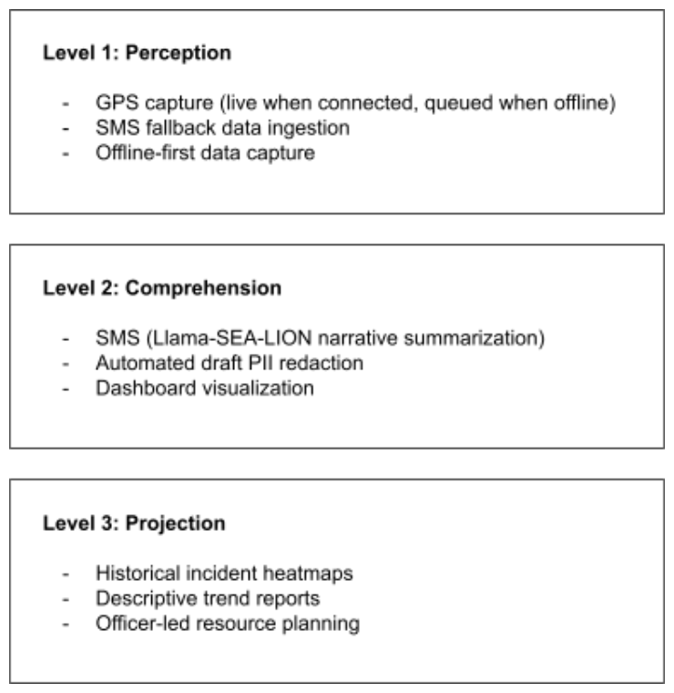
Note. Adapted from Endsley's (1995) three-level model of situational awareness, as applied to the Baranguard emergency dispatch system. Level 1 (Perception) corresponds to real-time data ingestion; Level 2 (Comprehension) corresponds to AI-assisted synthesis and PII redaction; Level 3 corresponds to historical trend visualisation supporting situational assessment.
As illustrated in Figure 1, these three levels map directly onto the system's core functional layers:
Level 1 Perception: The ability to perceive the status, attributes, and dynamics of relevant elements in the environment. In Baranguard, this corresponds to the system's ability to ingest real-time incident reports, capture exact GPS coordinates from responders, and receive SMS distress signals from offline field tanods.
Level 2 Comprehension: The synthesis of Level 1 elements enables the holistic understanding of the situation. Baranguard achieves this by using the locally hosted Llama-SEA-LION SLM to parse and summarize raw, unstructured field data. By filtering informational noise and generating draft PII redactions for the Secretary's review and approval, the system presents clear and actionable intelligence to the dispatch commander through the web dashboard while supporting compliance with applicable data privacy requirements under RA 10173 through automated PII redaction, access controls, and human review.
Level 3 Projection: The ability to anticipate future states based on comprehension of the current situation. Baranguard supports this level indirectly rather than computationally: the system aggregates historical incident records into spatial heatmaps and descriptive trend reports, from which barangay officials form their own judgements about patrol scheduling and resource placement. The system performs no predictive modelling and generates no forecasts; the projection function in Endsley's model is exercised by the human decision-maker, informed by the retrospective evidence the system presents.
2.4 Concept of the Study
The structural development and data flow of the Baranguard system operate on a comprehensive Input-Process-Output (IPO) conceptual model. This framework illustrates the transformation of raw community inputs into structured, actionable intelligence through a locally hosted, resilient processing infrastructure.
Input: The system receives raw data from two primary vectors. The first is administrative data, which includes historical blotter records, resident demographic profiles, and barangay structural maps. The second is operational data, comprising citizen incident reports submitted through the public web form, field observations and incident narratives captured by Tanods on the mobile application, and GPS coordinates transmitted or queued by responder devices.
Process: The core processing layer runs entirely on the unified administrative workstation within the barangay command centre. The centralised database, the web dashboard, and AI inference are all hosted on this single machine, which remains reachable over the barangay local area network during internet outages. Within this environment, the following mechanisms execute:
A. Offline-first sync and SMS parsing: The mobile application
synchronises cached SQLite data to the command centre server when a
network path is available, whether over cellular data, broadband, or local
Wi-Fi. Synchronisation is idempotent: a (device_id, client_event_id) pair
prevents duplicate records when a batch is retried after an interrupted
upload. During partial outages, the backend SMS parsing engine
decodes SMS fallback messages into structured database entries.
B. AI processing (local): The locally hosted Llama-SEA-LION-v3.5-8B-R
model ingests the narrative text directly on the unified administrative
workstation. It performs natural language translation, generates concise
incident summaries, and executes automated PII redaction to enforce
data privacy compliance, entirely without external API calls. Because
inference runs on the administrative workstation rather than on an
external service, AI processing is unaffected by internet outages and
remains available whenever the workstation is powered and reachable on
the barangay local area network. When a Tanod device is disconnected
from that network, incident capture continues locally on the device and
the narrative is queued; AI processing is applied after the record reaches
the server.
Output: The culmination of processing yields: an access-controlled electronic blotter repository in which finalised records cannot be silently altered, since any amendment copies the superseded narrative into a revision table before the new text is written; dispatch assignments delivered to responder devices; historical incident and hazard heatmaps supporting patrol planning; generated Lupon packets for dispute resolution proceedings; and SMS status notifications sent to citizens who submitted reports through the public web form.
The complete end-to-end data transformation from raw community inputs to structured actionable intelligence is summarized in Figure 2.
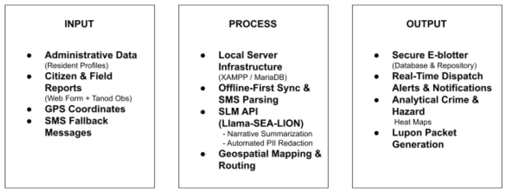
Note. The IPO framework illustrates the three-stage data transformation pipeline of the Baranguard system. Inputs consist of administrative and real-time operational data. Processing is performed through offline-first synchronization, SMS parsing, and local AI inference via the Llama-SEA-LION-v3.5-8B-R model. Outputs include the electronic blotter repository, dispatch alerts, heatmap analytics, and SMS confirmation receipts. 2.5 Definition of Terms
The following key terms are defined conceptually and operationally as applied within this capstone project:
Agile Scrum methodology. An iterative software engineering framework that emphasizes continuous improvement and rapid delivery through short development cycles. In this study, it serves as the specific lifecycle adopted to build, test, and refine the system in collaboration with Pilar barangay officials.
Barangay. The basic political and administrative unit of government in the Philippines responsible for public service delivery. Identifies the primary deployment sites for the system: Barangays Dao, Binanuahan, Marifosque, and Banuyo in Pilar, Sorsogon.
Baranguard. Combines "Barangay" and "Vanguard" to represent a frontline defense and administrative response unit in local communities. The official name of the proposed local-server based, offline-first incident reporting and emergency dispatch software developed in this project.
Data Privacy Act of 2012 (RA 10173). A Philippine legislative framework designed to protect all forms of private, personal, or sensitive information. Establishes the statutory obligations that the system's privacy controls are designed to support. Complainant and victim details in blotter narratives are proposed for redaction by the language model and confirmed by the Barangay Secretary before a record is finalised.
Dispatch. The act of sending personnel, equipment, or resources to a specific destination to execute an emergency or administrative response. The core mechanism within the command center that allows administrators to assign tasks, provide GPS routing, and deploy tanods to incident locations.
Electronic blotter. An electronic recording system utilized by law enforcement and local government units to log and monitor daily incident reports. The digital module within the system's dashboard is designed to replace the physical logbooks currently used by the selected barangays.
Human-in-the-loop validation. A design pattern in which an automated system produces a proposed output that a designated human operator must explicitly approve before the output takes effect. In Baranguard, the language model's redacted narrative carries draft status until the Barangay Secretary approves it; blotter finalisation is blocked until that approval is recorded.
Intelligence. In emergency management, curated, actionable information collected and analyzed to support decision-making. Represents the analytical capabilities of the system, using a small language model to synthesize unstructured incident reports and extract insights for officials.
ISO/IEC 25010:2023. The current international standard for software product quality measurement defines characteristics such as functional suitability, performance efficiency, compatibility, interaction capability, reliability, security, maintainability, flexibility, and safety. Acts as the formal evaluation instrument used by IT experts and end-users to rate the technical integrity and user acceptance of the deployed system.
Local-server deployment. A hosting arrangement in which application and database services run on hardware physically located at the point of use rather than on remote infrastructure. In Baranguard, the database, web dashboard, and AI inference runtime all operate on a single administrative workstation inside the barangay command centre, which preserves system availability over the local area network during internet outages.
Offline-first architecture. A software design paradigm in which an application functions primarily without an active internet connection by storing data locally in an embedded database. Defines the structural framework of the mobile application, enabling field Tanods to capture incidents, record GPS coordinates, and access pre-cached MBTiles map packages during network disconnections, with offline records queued in SQLite for automatic synchronization once server connectivity is restored.
Personally identifiable information (PII). Any data that could potentially identify a specific individual, either directly or indirectly, such as names or home addresses. Refers to the sensitive narrative data collected from complainants that the system's locally hosted AI model is programmed to detect and obscure automatically, without transmitting raw data to any external service.
SMS best-effort fallback. A communication mechanism that utilizes standard cellular networks to transmit critical data during broadband internet outages. While optimized for partial-outage scenarios as a non-guaranteed protocol, complete network blackouts are instead managed by the offline-first SQLite cache.
Small language model (SLM). A compact artificial intelligence model optimized for natural language processing tasks that requires minimal computational overhead. Refers exclusively to the Llama-SEA-LION-v3.5-8B-R model, which is locally self-hosted on the unified administrative workstation and performs all summarization and PII redaction tasks on-premises, with no external API dependency.
3 Materials and Methods
This chapter presents the software, hardware, and methodological framework utilized in the development of Baranguard: Barangay Intelligence and Emergency Dispatch System. The resources and methods were selected based on the requirements of an offline-first architecture, the integration of a locally hosted intelligent language model, and the operational constraints of the target local government units.
3.1 Materials
In line with the project's objective to provide a resilient, local-server-based, and offline-first solution for local governance, the materials were chosen to support high-performance local AI inference, continuous data synchronization, and reliable multi-channel communication without requiring constant, high-bandwidth internet access in the field.
3.1.1 Software
The following software tools and frameworks were utilized in the development of the Baranguard system, with their respective versions summarized in Table 1:
PHP 8.2 and Node.js. PHP 8.2 is the primary server-side language, implemented without a web framework using custom routing. Node.js supports supplementary background processing.
Vanilla JavaScript (ECMAScript 2023+). Responsible for all dashboard frontend logic and live incident and responder updates. The dashboard is written without a JavaScript framework or bundler; offline resilience is provided by the local hosting of the server itself rather than by client-side caching. Offline data capture is handled exclusively by the mobile application.
Ionic Framework 8.8.5. Provides pre-built, mobile-optimized UI components to build the frontend interface for the tanod mobile application, ensuring a native-like experience on Android devices.
MySQL 8.0 / MariaDB (XAMPP). Serves as the primary structured relational storage layer hosted locally on the administrative workstation within the barangay command center, securing resident profiles, incident records, and spatial data over the local area network (LAN).
MapLibre GL JS. Renders all interactive maps in both platforms — the GIS live-tracking and historical heatmap pages on the dashboard, and the live-map and assignment-detail pages in the mobile application. MapLibre was selected over proprietary alternatives because it renders directly from locally stored MBTiles packages, which is a precondition for offline map display.
SQLite (via Capacitor). Operates as the embedded local database within the mobile application, capturing and caching field reports and GPS coordinates during offline periods before synchronising them to the command centre server.
Capacitor 8.0. Acts as the bridge that wraps the web-based JavaScript codebase into a native Android container, granting the application access to background notification services and native SMS functions for emergency dispatch alerts.
Visual Studio Code 1.85+ and Android Studio. The primary integrated development environments used for writing, debugging, and compiling the full-stack codebase and the final APK file for physical deployment.
Git and GitHub 2.44.0. Used for source code management and collaborative team development, ensuring version history is preserved.
Plain CSS (no framework). Dashboard styling is implemented in hand-authored CSS without a utility framework or preprocessor, avoiding a build step and keeping the deployed dashboard directly editable by future maintainers, a maintainability consideration for barangay-level deployment where no development toolchain is present.
Semaphore SMS Gateway and Paired Mobile Device. Semaphore is utilized as the primary cloud-based SMS gateway provider to transmit emergency dispatch alerts and intercept fallback messages during partial broadband outages. To ensure operational continuity when the barangay hall's local broadband connection fails, a paired mobile phone is tethered directly to the unified administrative workstation. This acts as a localized GSM modem, catching and sending standard text messages independent of terrestrial IP networks.
XAMPP Server Environment. Provides the local Apache web server and MariaDB/MySQL database stack hosted directly on the unified administrative workstation, ensuring full command center operations remain functional over LAN during internet broadband blackouts without external cloud hosting dependencies.
OpenRouteService (ORS). Provides turn-by-turn navigation routing via its GeoJSON directions endpoint. Routing requires network connectivity; where ORS is unreachable, the application returns a previously cached route where one exists, or reports the route as unavailable. Map display remains functional offline through cached tiles even when routing does not.
Ollama (local inference runtime). Used to self-host the Llama-SEA-LION-v3.5-8B-R model on the unified administrative workstation, enabling on-premises AI inference without routing data to external APIs. This supports RA 10173 data privacy workflows by generating draft PII redactions locally for administrative human verification prior to record storage.
| Software | Version |
|---|---|
| PHP | 8.2 |
| MariaDB (XAMPP) | 10.4 |
| Apache (XAMPP) | |
| Node.js | |
| Vanilla JavaScript | ECMAScript 2023 |
| MapLibre GL JS | |
| OpenRouteService API | v2 (directions/geojson) |
| Ionic Framework | 8.8.5 |
| Capacitor | 8.0 |
| React | |
| Vite | |
| TypeScript | |
| Android SDK / target API level | |
| Android Studio | Panda 4 |
| Visual Studio Code | 1.85+ |
| Git and GitHub | 2.44.0 |
| Llama-SEA-LION-v3.5-8B-R | |
| Semaphore SMS Gateway | |
| Ollama (AI Runtime) |
Note. Versions listed reflect the exact tool and library versions used during development and evaluation, to support reproducibility.
eGIF Compliance. In accordance with the DICT's e-Government Interoperability Framework (eGIF) v2.0, the system's REST API endpoints use JSON as the standard data exchange format, conforming to eGIF's mandate for open, non-proprietary standards in government information systems. SMS message encoding follows the standard GSM 03.38 character set for maximum compatibility across Philippine mobile networks. No proprietary or closed-format data exchange protocols are used in inter-system communication. Where the system interfaces with cloud infrastructure, standard HTTPS with TLS 1.3 encryption is employed, consistent with eGIF's security interoperability guidelines. While formal eGIF compliance audits are primarily mandated for higher-level government agencies (cities and municipalities), Baranguard voluntarily adopts these eGIF v2.0 interoperability standards. This proactive compliance ensures the barangay-level system can seamlessly integrate with the DICT's larger e-Government architecture in the future.
3.1.2 SLM Model Selection Rationale
The integration of artificial intelligence for text summarization and automated PII redaction relies on selecting a model capable of interpreting the linguistic nuances of the Philippines. As detailed in Table 2, the Llama-SEA-LION-v3.5-8B-R model was selected as the locally self-hosted SLM over other baseline models based on the following criteria:
Filipino language competency. The primary determinant is the model's ability to perform natural language processing tasks on barangay blotter text, which characteristically contains code-switched Taglish, Filipino proper names, and regional dialects. Developed by AI Singapore to address the under-representation of Southeast Asian languages, it was instruction-tuned on Filipino and evaluated on the SEA-HELM multilingual benchmark, outperforming generalized global models on regional tasks Ng, R., et al. (2025).
Reasoning and context length. The model possesses a 128K context length and specialized reasoning capability (the "-R" designation), critical for accurately detecting context-dependent PII and translating convoluted field narratives without hallucinating facts.
Local inference efficiency. At 8 billion parameters, the model functions as a small language model that requires significantly less computational overhead than massive models, allowing for cost-efficient, low-latency local inference on the unified administrative workstation. Running inference locally via Ollama keeps AI features available whenever the administrative workstation is running, independently of internet connectivity, and ensures that unredacted incident narratives are never transmitted to an external AI service. Unredacted narratives remain within the barangay's own deployment environment throughout processing. This supports both the offline-first design contract and RA 10173 compliance workflows by keeping raw narratives on-premises while generating draft PII redactions for administrative human verification prior to record storage.
| Model | Parameters | Context Length | Filipino NLP Competency | SEA-HELM Benchmark Score |
|---|---|---|---|---|
| Llama-SEA-LION-v3.5-8B-R (selected) | 8B | 128K | Explicitly trained on Filipino; SEA-HELM validated Ng, R., et al. (2025). | Outperformed global models in Filipino and Tagalog NLP tasks Ng, R., et al. (2025). |
| Phi-3 Mini 3.8B | 3.8B | 4K / 128K | English-centric; documented multilingual limitations | Not evaluated on SEA-HELM |
| Gemma 2B | 2B | 8K | No Filipino-specific training | Not evaluated on SEA-HELM |
Note. Selection criteria prioritized Filipino language competency, reasoning capability, context length, and local inference efficiency on the unified administrative workstation. SEA-HELM = Southeast Asian Languages Holistic Evaluation and Alignment Metric.
3.1.3 Hardware
The hardware resources employed for development and field deployment are outlined below. Because the system is designed for deployment on a single workstation rather than on dedicated server hardware, no rack-mounted or clustered infrastructure is required at the barangay hall. To ensure deployment feasibility and cost-efficiency for rural local government units, the local AI inference environment and the dispatcher dashboard are combined into a single unified machine. This workstation is configured to use 4-bit quantization via Ollama, reducing the memory footprint of the 8B-parameter model and allowing the web interface and the inference runtime to operate concurrently on one machine. Concurrent operation was treated as a testable requirement rather than an assumption: dashboard API responses were required to complete within two seconds while an inference request was in progress, with measured throughput, first-token latency, and memory utilisation reported in the performance testing results. The specific hardware requirements for the development, unified administrative, and field deployment phases are outlined in Table 3.
| Device | Role | Specifications |
|---|---|---|
| Development workstations | Primary machines for coding, API integration, and local server configuration | Intel Core i5 / AMD Ryzen 5 equivalent, 16 GB RAM, 512 GB SSD, Windows 11 |
| Unified Administrative Workstation | Acts concurrently as the web-based command center for dispatchers and the local SLM inference server (Ollama) for on-premises AI processing | Minimum: 6-Core CPU (Intel Core i5 / AMD Ryzen 5), 16 GB RAM, 6 GB+ VRAM GPU (Recommended for low-latency AI), Windows 10/11 or Linux |
| Android mobile devices | Field testing and deployment for the tanod mobile application | Minimum Android 9.0 (Pie), 2 GB+ RAM, active cellular reception, GPS module |
3.2 Software Methodology
The Agile Scrum framework was adopted as the development methodology for this project. Scrum was selected over traditional Waterfall and Rapid Application Development (RAD) because it provides time-boxed checkpoints (sprints) that allow barangay officials to test the SMS fallback mechanisms and AI draft PII redaction review workflows continuously, ensuring complex components align with on-the-ground public safety requirements, as compared in Table 4. The standard Agile Scrum process utilized throughout the system's development life cycle is illustrated in Figure 3 below.
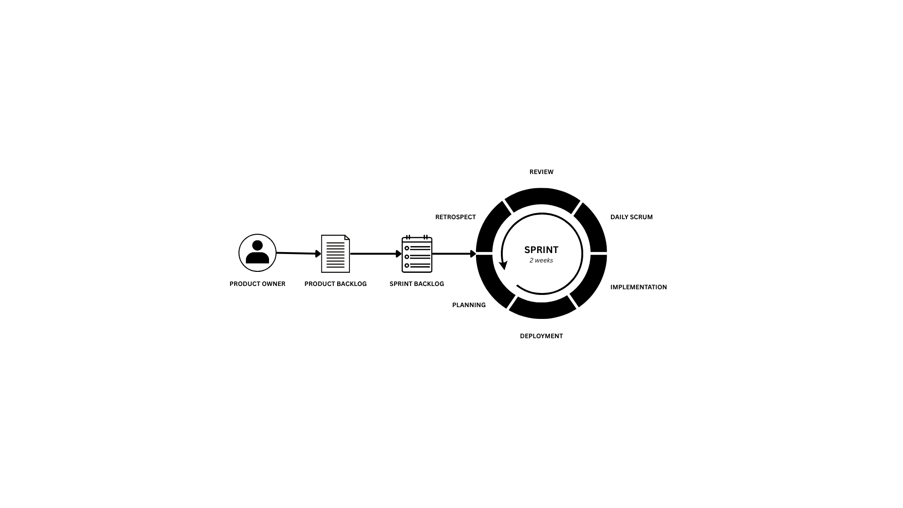
Note. This diagram illustrates the iterative Scrum cycle followed throughout the project's nine development phases, from the Pre-Sprint baseline measurement collection through Sprint 8 (User Acceptance Testing and ISO/IEC 25010:2023 evaluation). Each sprint followed the standard cycle of sprint planning, development, review, and retrospective described in Sections 3.2.1 through 3.2.5. The specific backlog item and duration for each sprint are detailed in Table 6.
| Criterion | Scrum (selected) | Waterfall | RAD |
|---|---|---|---|
| Stakeholder validation | Bi-weekly sprint reviews | End of project cycle only | Prototype-focused only |
| Scope control | Managed via product backlog | Rigid, inflexible requirements | Scope tends to expand |
| Complex integrations | Sprint-by-sprint integration | Sequential, late-stage integration | Limited to rapid prototypes |
3.2.0 Baseline Measurement
Prior to Sprint 0, the research team conducted structured observation sessions and semi-structured interviews with tanods and barangay officials across the four target barangays to establish pre-intervention performance baselines. These baseline metrics serve as the quantitative comparator against which post-deployment ISO 25010:2023 evaluation scores and self-reported efficiency improvements are contextualized.
The following metrics were collected from each barangay through a minimum of two observation sessions and three staff interviews per barangay: 1. Blotter logging time: The average time (in minutes) required for a tanod or
secretary to manually write and file a complete blotter entry from the moment an
incident is verbally reported, including time spent locating the correct logbook,
writing the narrative, and obtaining a supervisor signature. 2. Tanod dispatch time: The average time (in minutes) for a dispatcher to identify
an available tanod, contact them via mobile application alert or SMS fallback, and
confirm their deployment to an incident location. 3. Data integrity error rate: The number of documented data loss or legibility
incidents per quarter, including lost logbook pages, water-damaged entries,
illegible handwriting flagged during audit, and entries with missing required fields. 4. Post-deployment comparison: The same three metrics were re-measured after
the deployment period. Blotter logging time and dispatch coordination time were
captured from system timestamps rather than by observation, specifically, the
interval between incident record creation and record finalization, and the interval
between dispatch creation and responder acknowledgement, which removes
observer effects from the post-intervention measure. Because the
pre-intervention measure is observational and the post-intervention measure is
instrumented, the two are not statistically equivalent; the comparison is reported
as an indicative operational change rather than a controlled experimental result.
3.2.1 Project Initialization and Defining the Product Backlog
| Item | User Story |
|---|---|
| 1 | As a dispatcher, I want to view a GIS heatmap so that I can visualize high-risk incident zones. |
| 2 | As a dispatcher, I want to track tanods via GPS so that I can deploy the closest responder to an emergency. |
| 3 | As a tanod, I want to log incident details offline so that I can capture data even when typhoon winds disrupt mobile internet. |
| 4 | As a tanod, I want the application to automatically send an SMS fallback alert so that my dispatch coordinates reach the command center when broadband fails and cellular signal is still available. |
| 5 | As an administrator, I want the system to automatically generate draft PII redactions for administrative review so that narratives can be reviewed and cleared of personal information before any public-facing record is produced. |
| 6 | As a dispatcher, I want the SLM to automatically summarize unstructured field notes so that I can quickly grasp the nature of the emergency. |
The development process was initiated through a formal kick-off meeting with representatives from the four target barangays in Pilar, Sorsogon. Through semi-structured interviews and prototype reviews, the team identified the operational bottlenecks in current manual incident reporting processes. These requirements were consolidated into a formalized product backlog, which serves as the prioritized list of all features needed for the system, as detailed in Table 5 above.
3.2.2 Sprint Planning
The project was divided into a pre-sprint phase for baseline measurement and an eight-sprint development cycle, as outlined in Table 6.
| Item | Sprint Backlog Description | Sprint | Week |
|---|---|---|---|
| 0 | Baseline measurement collection and pre-intervention documentation | Pre-Sprint | Week 0 |
| 1 | Local server environment setup (XAMPP/MariaDB) and database schema design | Sprint 0 | Week 1–2 |
| 2 | Development of web-based command center and GIS dashboard | Sprint 1 | Week 3–4 |
| 3 | Development of mobile application UI and offline SQLite caching engine | Sprint 2 | Week 5–6 |
| 4 | Integration of real-time GPS tracking and asynchronous local server sync | Sprint 3 | Week 7–8 |
| 5 | SMS gateway integration and data-to-SMS parsing fallback protocol | Sprint 4 | Week 9–10 |
| 6 | Local inference server setup (Ollama) and integration of Llama-SEA-LION-v3.5-8B-R | Sprint 5 | Week 11–12 |
| 7 | Development and validation of the PII redaction pipeline (prompt configuration and evaluation harness) | Sprint 6 | Week 13–14 |
| 8 | Role-based access control, security hardening, and integration testing | Sprint 7 | Week 15–16 |
| 9 | User acceptance testing (UAT) and ISO/IEC 25010:2023 evaluation | Sprint 8 | Week 17–18 |
3.2.3 Sprint Development
During the sprint development phase, the team executed the planned technical tasks. The web platform was built and deployed to the XAMPP environment on the unified administrative workstation, while the Android APK was compiled using Ionic and Capacitor. The locally hosted Llama-SEA-LION-v3.5-8B-R model was configured to run on the unified administrative workstation with no external API dependencies. Progress was tracked through recorded stand-up sessions logged in the team development log, with issues — particularly SMS gateway latency and local inference optimisation, raised and resolved against the sprint backlog, and code branches merged using Git.
3.2.4 Sprint Review
At the conclusion of each two-week sprint, a functioning software increment was demonstrated to the user acceptance testing team, which included barangay officials and tanods. End-users tested new features, such as testing the mobile application in airplane mode to verify SMS fallback triggers and testing local AI summarization on sample Taglish narratives, and provided immediate feedback on operational viability.
3.2.5 Sprint Retrospective
Following each sprint review, the development team conducted an internal retrospective to evaluate their workflow. They discussed what engineering practices succeeded and what required adjustment, such as optimizing the local inference speed and refining the NLP prompts sent to the Llama-SEA-LION model to reduce hallucination rates on regional dialect inputs. By identifying these core performance issues early, developers systematically eliminated technical debt, integrated localized automated testing pipelines, and enhanced overall system predictability. These process adjustments ensured high code quality and team efficiency throughout the development cycle.
3.3 Evaluation Procedure
The evaluation was conducted to determine whether Baranguard met its functional requirements and to assess its software quality using the ISO/IEC 25010:2023 standard. A summary of the system testing and evaluation methods is provided in Table 7.
| Test Type | Purpose |
|---|---|
| Unit testing | Validate individual module functions |
| Integration testing | Verify cross-module data propagation |
| Performance testing | Verify that the unified administrative workstation can concurrently handle web dashboard operations and local 4-bit AI inference while maintaining dashboard API response times below two seconds and without memory exhaustion, with measured latency and utilisation reported. |
| SLM Validation testing | Evaluate the precision, recall, and F1-score of the locally hosted Llama-SEA-LION-v3.5-8B-R model for automated draft PII redaction across a 350-record synthetic narrative dataset containing multi-entity PII instances per document. |
| System testing | End-to-end workflow validation under simulated disaster scenarios |
| User acceptance testing (UAT) | Scenario-based task evaluation by barangay personnel |
| Safety scenario testing | Verify defined system behaviour under a matrix of adverse operational scenarios (GPS error, duplicate alerts, delayed SMS, AI omission, missed redaction, misassigned dispatch) |
| Summarisation fidelity assessment | Assess factual consistency, omission, and fabrication in AI-generated incident summaries against source narratives |
3.3.1 Respondents and Sample Size Justification
The study utilized a purposive sampling technique to select 27 respondents. Because evaluating the system requires specific domain knowledge and direct operational involvement in emergency dispatch protocols, probability sampling formulas were not applied. Instead, respondents were deliberately chosen based on their technical expertise and their mandated roles within the local government units of Barangays Dao, Binanuahan, Marifosque, and Banuyo. The sample includes IT professionals to assess the system's technical and architectural integrity, alongside a comprehensive cross-section of barangay personnel—ranging from executive officials to frontline responders—to validate operational usability and functional suitability under the ISO/IEC 25010:2023 standard.
The specific distribution of these 27 respondents and the rationale for their selection are detailed in Table 8.
| Role | Count | Rationale |
|---|---|---|
| IT Experts | 3 | Technical panel to evaluate cloud security, local SLM inference latency, and codebase maintainability. |
| Punong Barangay | 4 | Executive users validating the command center dashboard's utility for overall barangay governance and resource allocation. |
| Barangay Secretary | 4 | Administrative users assessing the electronic blotter's efficiency, data management, and RA 10173 compliance features. |
| Lupon Members | 4 | Officials involved in Katarungang Pambarangay proceedings, who evaluate the generated Lupon packet and redacted narrative output rather than the software interface directly. |
| Barangay Tanods | 12 | Frontline field responders tasked with testing the mobile application's usability, GPS routing, and offline SMS fallback capabilities. |
| Total | 27 |
Note. Because Lupon members interact with the system's generated documents rather than its operating interface, their evaluation is scoped to Functional Suitability and Interaction Capability as these apply to the generated Lupon packet, completeness of the record, legibility of the redacted narrative, and fitness for use in dispute resolution proceedings. Their responses are reported separately and are not pooled into the system-wide weighted means for characteristics they have no basis to judge. The dispatcher function described in Chapters 1 and 2 is performed by the Administrator and/or Barangay Secretary role rather than by a separate system role; this respondent group therefore evaluates the Dispatch Center interface in addition to their own primary modules.
3.3.2 Evaluation Instrument and Validity
The primary research instrument was a structured survey questionnaire anchored on the ISO/IEC 25010:2023 Systems and Software Quality Requirements and Evaluation (SQuaRE) model. This study adopts the nine-characteristic product quality model defined in ISO/IEC 25010:2023. The 2023 revision is used rather than the 2011 edition because it introduces Safety as a top-level quality characteristic. Given that Baranguard dispatches first responders to active emergency scenes, where an incorrect route or an undelivered dispatch alert could place a Tanod in physical danger, Safety is a necessary evaluation dimension for this system and could not be assessed under the 2011 model. To ensure semantic clarity and prevent technical jargon from confounding the data, the questionnaire items were meticulously contextualized into local administrative terminology and pre-tested for clarity.
The questionnaire assessed the system across the nine characteristics of the 2023 model: Functional Suitability, Performance Efficiency, Compatibility, Interaction Capability, Reliability, Security, Maintainability, Flexibility, and Safety. Because "Interaction Capability" and "Flexibility" are unfamiliar terms to non-technical respondents, questionnaire items for these characteristics were phrased in operational language (ease of use and learnability; adaptability across devices and deployment settings) while retaining the standard's definitions for analysis and reporting. Prior to full-scale deployment, the instrument underwent rigorous content validation by a panel of software engineering experts and disaster risk reduction professionals to verify that each metric accurately mapped to the operational realities of local government units.
The instrument utilized a 5-point Likert scale. Data were analyzed using the weighted mean formula:
X̄ = (∑fx) / N
Where X̄ is the weighted mean, f is the frequency of responses, x is the Likert scale weight (1–5), and N is the total number of respondents. The verbal interpretation and description for each mean range are presented in Table 9.
| Range | Verbal Interpretation | Description |
|---|---|---|
| 4.21 – 5.00 | Strongly Agree | The system fully satisfies requirements and is highly effective |
| 3.41 – 4.20 | Agree | The system mostly satisfies requirements and is generally reliable |
| 2.61 – 3.40 | Neutral | The system partially satisfies requirements with notable gaps |
| 1.81 – 2.60 | Disagree | The system rarely satisfies requirements and is largely ineffective |
| 1.00 – 1.80 | Strongly Disagree | The system does not satisfy requirements |
3.3.3 PII Masking Validation Methodology
To measure the performance of the redaction control that supports the system's privacy safeguards, a specific testing methodology was applied to the locally hosted Llama-SEA-LION-v3.5-8B-R redaction module.
Test dataset. The NLP engine was tested against a synthetic benchmarking dataset of 350 mock incident narratives containing pre-tagged PII entities. Each narrative was constructed to contain multiple PII instances per document, totaling 1,248 tagged PII entities across four primary categories: Filipino full names, Sorsogon barangay-level addresses, Philippine mobile contact numbers, and birthdate/age references in mixed formats. The dataset was constructed as follows: A. PII entity distribution: Across the 350 synthetic narratives, 1,248 PII entities
were distributed across four primary categories: Filipino full names (sourced from
open Filipino name corpora), barangay-level addresses drawn from PhilGIS
administrative boundary data for Sorsogon province, mobile contact numbers in
Philippine format (0917/0918/0919 prefixes), and birthdate/age references in
mixed formats (calendar, relative, and ISO). B. Narrative generation: All narratives were authored using manually written
Taglish templates reviewed by a native Filipino speaker with working knowledge
of Sorsognon regional dialect vocabulary, to ensure linguistic realism. No actual
historical blotter records from the target barangays were used. Each narrative
was reviewed by a second team member before inclusion in the test set. C. Baseline comparator: The SLM redaction performance was benchmarked
against a baseline regex-only redaction filter to demonstrate the added value of
the language model for context-dependent PII detection. D. Per-entity-type reporting: Precision and recall are computed and reported
separately for each of the four PII entity types rather than as a single aggregate,
since the regex baseline already covers two of the four categories (mobile
numbers, birthdates) and the language model's contribution is best demonstrated
on the two it cannot reach (names, addresses). E. Over-redaction (false positive) evaluation: In addition to missed entities, the
evaluation measures the proportion of non-PII spans incorrectly replaced with a
placeholder, with particular attention to public-role references, the name of a
barangay official acting in an official capacity is legitimately part of the public
record and should not be redacted.
The objective was to evaluate the model's precision and recall in masking sensitive data without altering the core factual context of the emergency report.
3.3.4 Acceptance Criteria
The Baranguard system was considered ready for deployment when all of the following criteria were met: 1. All user stories in the product backlog successfully pass UAT validation. 2. The system achieves a weighted mean of at least 4.21 (Strongly Agree) in the
overall ISO/IEC 25010:2023 evaluation across all nine quality characteristics. 3. The SMS best-effort fallback protocol successfully transmits the encoded
coordinate payload in at least 19 out of 20 (95%) simulated broadband
disconnection scenarios, across three distinct Android device models, under
conditions where cellular signal strength is at or above −100 dBm. This threshold
is consistent with industry-standard 95% reliability conventions in emergency
communication systems, and reflects the best-effort nature of the SMS channel
rather than the absolute guarantee implied by a 100% criterion. 4. The locally hosted SLM-driven PII redaction engine achieves a minimum recall of
95% and precision of 90% across the 350-narrative synthetic test dataset
(containing 1,248 multi-entity instances), benchmarked against the baseline
regex-only filter. These thresholds are calibrated to exceed baseline NER
benchmarks while acknowledging that probabilistic language models cannot
guarantee zero false negatives. A 95% recall threshold ensures that at least 95%
of all tagged PII entities across the multi-entity benchmark are successfully
identified for redaction prior to administrative review. To mitigate the risk of false
negatives and AI hallucinations, a mandatory human-in-the-loop protocol is
enforced within the system's architecture: the SLM generates a draft redaction,
which the barangay secretary must manually review and explicitly approve before
the incident narrative is committed to the permanent, public-facing database.
3.4 Ethical Considerations
This study adhered to the following ethical guidelines throughout its development and testing phases:
Informed consent. Written consent was obtained from all 27 respondents prior to their participation in user acceptance testing and evaluation activities.
Data minimization and privacy (RA 10173). No actual historical resident data or real blotter records from the target barangays were used during software development, prompt configuration, or evaluation of the redaction pipeline. All testing was conducted using entirely synthetic, fabricated data generated by the research team to ensure zero risk of real-world privacy breaches. Furthermore, the locally self-hosted AI inference architecture ensures that no citizen data is ever transmitted to an external AI service provider.
Voluntary participation. Participation in the evaluation was completely voluntary. Respondents were informed of their right to withdraw from testing scenarios at any time without consequence.
Data handling during deployment testing. Where user acceptance testing was conducted using the deployed system, all records created during testing were flagged as test data and excluded from the operational blotter. The audit log records identifiers and action statuses only and does not retain raw personal information, consistent with the record-keeping requirements of the Implementing Rules and Regulations of RA 10173.
References
AI Research Group. (2025). Automated redaction of personally identifiable information on drug labels using optical character recognition and large language models for compliance with Thailand's Personal Data Protection Act. Applied Sciences, 15(9), 4923. https://doi.org/10.3390/app15094923
Budimir, M., Bee, E., & Paul, J. (2021). Using mobile phone technologies for disaster risk management: Reflections from SHEAR. Science for Humanitarian Emergencies and Resilience. https://nora.nerc.ac.uk/id/eprint/530631/1/SHEAR_MobileTechs_v6.pdf
Corradini, F., Leonesi, M., & Piangerelli, M. (2025). State of the art and future directions of small language models: A systematic review. Big Data and Cognitive Computing, 9(7), 189. https://doi.org/10.3390/bdcc9070189
Department of Information and Communications Technology. (2024). The Philippine government's digital transformation through DICT's e-Government initiatives. DICT Official Publications. https://dict.gov.ph
Perante-Calina, L. E. (2026). Digital governance: Local governments’ transformation journey towards transparency, accountability, participation, and equity (TAPE). Paper presented at the 2026 KAPA International Conference, Busan, South Korea. https://www.soumu.go.jp/main_content/001045224.pdf
Endsley, M. R. (1995). Toward a theory of situation awareness in dynamic systems. Human Factors, 37(1), 32–64. https://doi.org/10.1518/001872095779049543
Gasmido, W. L. J., De Guzman, J. T., Natividad, C. J. T., Sicuan, C. K. B. L., & Reyes, D. A. (2025). Digital Barangay: Ayos Lomboy's web-based management and information system. Psychology and Education: A Multidisciplinary Journal, 37(5), 424-431. https://doi.org/10.70838/pemj.370501
Gravitee. (2026, April 10). How to prevent PII leaks in AI systems: Automated data redaction for LLM prompts. Gravitee Technology Blog. https://www.gravitee.io/blog/how-to-prevent-pii-leaks-in-ai-systems-automated-da ta-redaction-for-llm-prompt
ISO/IEC. (2023). ISO/IEC 25010:2023, Systems and software engineering, Systems and software quality requirements and evaluation (SQuaRE), Product quality model. International Organization for Standardization.
Lardera, L. P., & Bagolong, S. (2026). Barangay information management system with automated mobile messaging for improved community engagement. International Journal on Science and Technology, 17(1), 1–12. https://www.ijsat.org/papers/2026/1/10412.pdf
Longcop, L. B., & Fuentes, H. C. (2024). Profile, problems and needs of Barangay Health Emergency Response Team in Gamay, Northern Samar. International Journal of Research and Innovation in Social Science, 8(11). https://doi.org/10.47772/IJRISS.2024.8110022
MarketsandMarkets. (2024). Incident and emergency management market by solution, communication tools & devices, service, vertical and region, Global forecast to 2030 [Grey literature, commercial market research report]. MarketsandMarkets Research. https://www.marketsandmarkets.com
National Disaster Risk Reduction and Management Council. (2020, November 11). SitRep No. 12 re preparedness measures and effects for Super Typhoon “Rolly” (I.N. GONI). https://ndrrmc.gov.ph/attachments/article/4135/SitRep_no_12_re_STY_ROLLY_a s_of_11NOV2020.pdf
National Disaster Risk Reduction and Management Council. (2023). National Disaster Risk Reduction and Management Council Annual Report 2023. NDRRMC. https://ndrrmc.gov.ph
National Privacy Commission. (2012). Republic Act No. 10173: Data Privacy Act of 2012. Government of the Republic of the Philippines. https://www.privacy.gov.ph
New Light Technologies. (2024). Building high-performance offline mobile apps for disaster zones. NLT Tech Blog. https://newlighttechnologies.com/blog/building-high-performance-offline-mobile-a pps-for-disaster-zones
Ng, G. C. (2025). Enhancing IT capstone programs through Agile practices: Insights from Filipino community projects. Journal of ICT in Education, 12(2), 99–123. https://doi.org/10.37134/jictie.vol12.2.7.2025
Ng, R., Nguyen, T. N., Huang, Y., et al. (2025). SEA-LION: Southeast Asian Languages in One Network. Proceedings of the 14th International Joint Conference on Natural Language Processing, 512-526. https://aclanthology.org/2025.ijcnlp-long.30.pdf
Omar, S., & Van Belle, J.-P. (2023). When social media fails: Alternative technologies for communication in disasters. Proceedings of the 9th African Conference on Information Systems and Technology, Article 11. https://digitalcommons.kennesaw.edu/cgi/viewcontent.cgi?article=1104&context= acist
Omar, S., et al. (2024). From SMS to RCS: Intelligent frameworks for resilient messaging in emergency scenarios. Telecommunications Research Journal. https://www.researchgate.net/publication/401606852_FROM_SMS_TO_RCS_IN TELLIGENT_FRAMEWORKS_FOR_RESILIENT_MESSAGING_IN_EMERGEN CY_SCENARIOS
PhilAtlas. (2024). Pilar, Sorsogon profile. Philippine Standard Geographic Code Data. https://www.philatlas.com/luzon/r05/sorsogon/pilar.html
Philippine Statistics Authority. (2024). National ICT household survey (NICTHS) preliminary results. PSA Official Reports. https://psa.gov.ph
Qureshi, A., Garcia-Font, V., Rifa-Pous, H., & Megias, D. (2021). Collaborative and efficient privacy-preserving critical incident management system. Expert Systems with Applications, 163, Article 113727. https://doi.org/10.1016/j.eswa.2020.113727
Sasane, K. P., Dhamale, N. S., Yadav, O. D., & Sonawane, R. B. (2026). Disaster management system. International Journal of Engineering Research & Technology, 15(4). https://doi.org/10.5281/zenodo.19692535
Tosper, R., Jr., Mangalino, J., Obena, K., Simon, M., Tayag, M., & Reyes, D. (2025). WebYu: A Barangay Yuson web-based information management system initiatives. Psychology and Education: A Multidisciplinary Journal, 37(5), 432-442. https://doi.org/10.70838/pemj.370502
United Nations. (2015). Transforming our world: The 2030 agenda for sustainable development. UN General Assembly Resolution 70/1. https://sdgs.un.org/2030agenda
Villafuerte, A. (2024). Public safety challenges faced by barangay officers and police: Towards a stronger policy framework. Journal of Interdisciplinary Perspectives, 3(1), 249–257. https://doi.org/10.69569/jip.2024.0639
APPENDICES
Appendix A: Data Flow Diagram
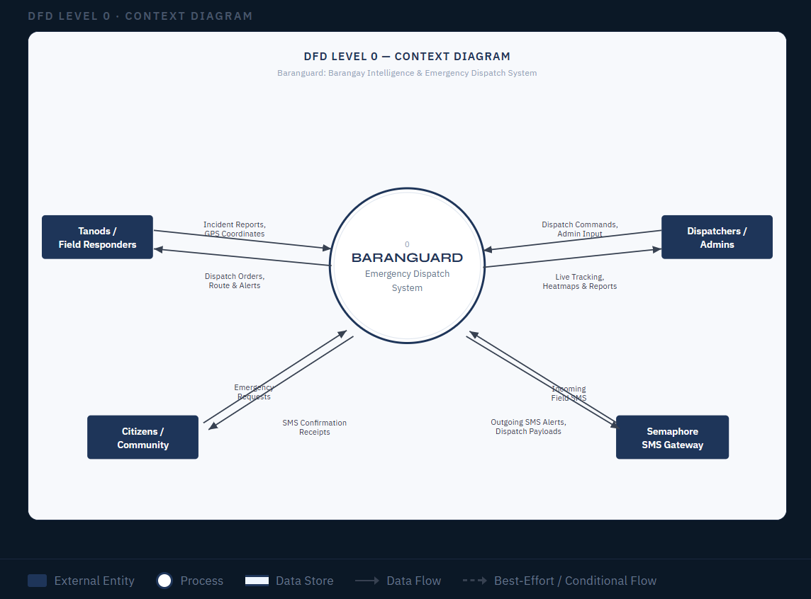
Note: This high-level context diagram defines the boundaries of the Baranguard system. It illustrates the data flows between the single system process and the four external entities: Citizens/Community, Teams/Field Responders, Dispatchers/Admin, and the Semaphore SMS Gateway, highlighting the primary inputs and outputs for emergency management.
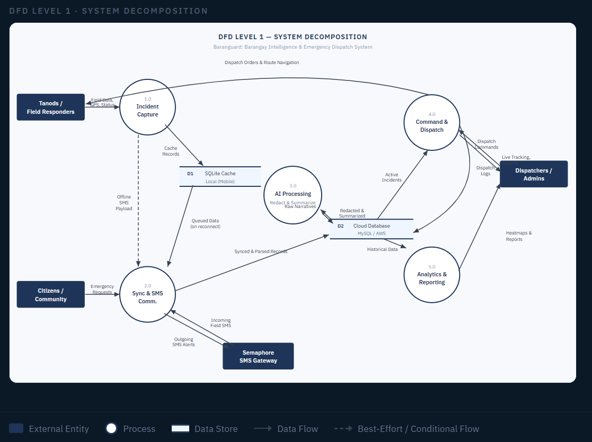
Note: This diagram illustrates the system decomposition of the BARANGUARD framework into its primary sub-processes. It maps the proposed architectural data routing between these sub-processes, external entities, and localized or cloud-based data stores.
Appendix B: Use Case Diagram
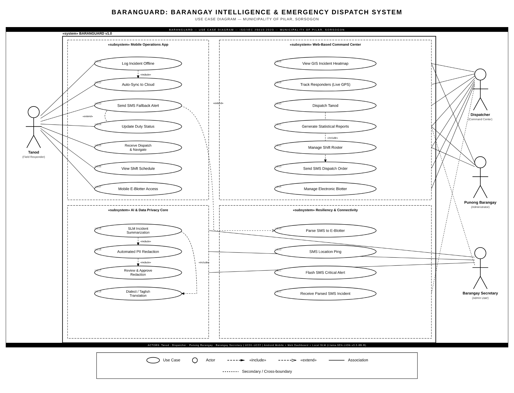
Note: This diagram specifies the functional requirements and user-role interactions within the proposed system boundary. It outlines the scope of privileges across three primary modules consisting of Mobile Operations, Web-Based Command Center, and Residency & Community as mapped to their respective actors: Barangay Authority, Barangay Secretary, Dispatcher, and Responder.
Appendix C. Entity Relationship Diagram
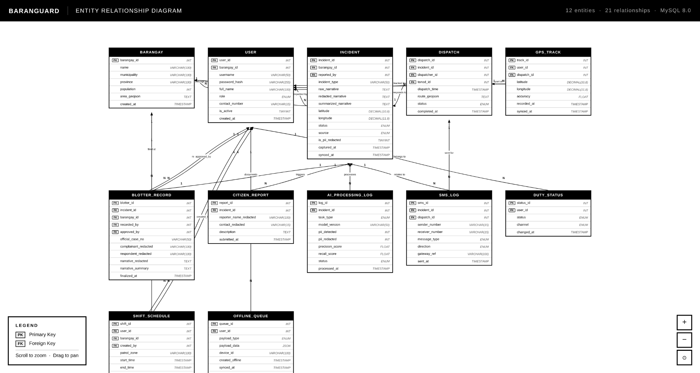
Note: This logical entity relationship diagram outlines the structural database schema designed for the BARANGUARD system. It defines the data persistence layer, specifying the attributes, primary/foreign key constraints, and cardinalities among core entities.
Appendix D: Initial Design of the Proposed System
Note: The login page serves as the secure entry point of the Baranguard system, allowing authorized users to access the platform through credential verification. It ensures secure and role-based access to system features and services.
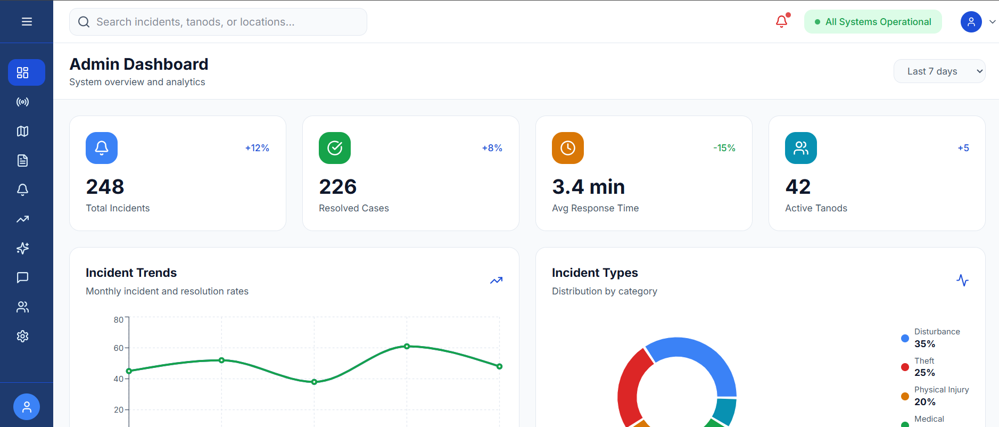
Note: The admin dashboard serves as the central interface for managing and monitoring the Baranguard system. It provides administrators with access to incident reports, responder tracking, system analytics, and other essential emergency management functions.
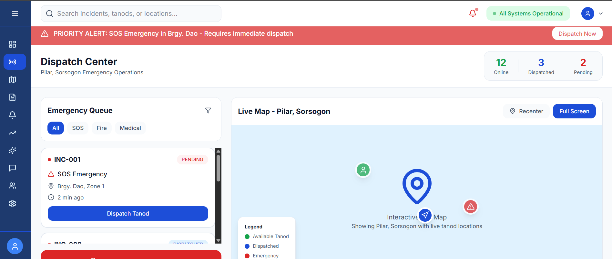
Note: The Dispatch Center allows authorized personnel to manage and coordinate emergency response activities, including incident monitoring and responder dispatching.
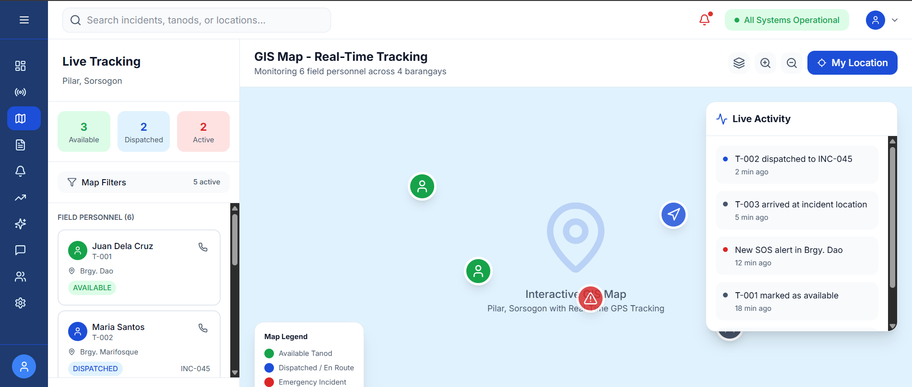
Note: The GIS Map Live Tracking page provides real-time location monitoring of responders and incidents using an interactive geographic map for improved emergency coordination.
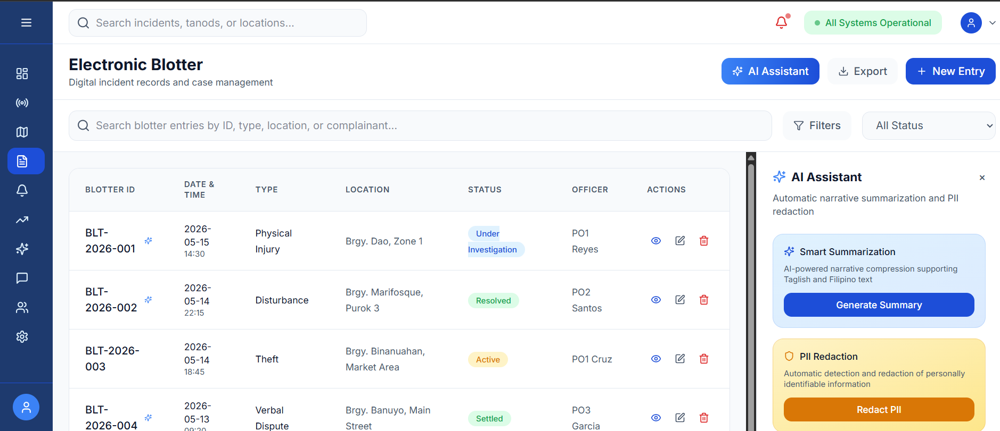
Note: The Electronic Blotter allows authorized users to record, manage, and review incident reports digitally. It also integrates an AI assistant to support report summarization and incident-related tasks.
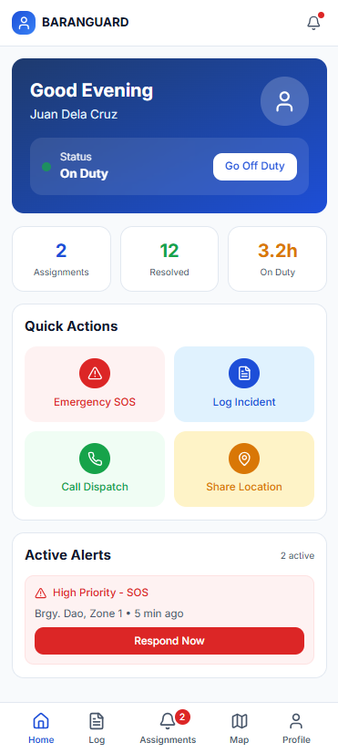
Note: The Tanod Mobile Application Home Page serves as the main interface for field responders, providing quick access to emergency reporting, incident updates, and essential response features for efficient field operations.
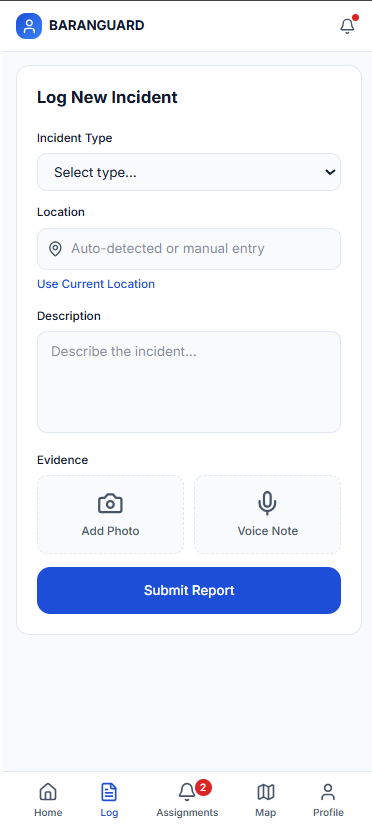
Note: The Tanod Mobile Application Log serves as a digital record-keeping tool that tracks the real-time activities and incident reports submitted by barangay tanods during their patrols. It centralizes field data to ensure accountability and provides administrators with an organized history of community safety efforts
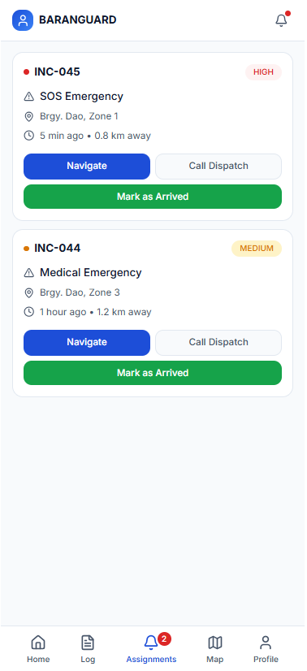
Note: The Tanod Mobile Application Assignments is a dispatch tool that enables administrators to track responders via GPS and assign tasks with precise routing. It allows tanods to receive and view their emergency assignments directly on their mobile devices, ensuring coordinated and accountable field operations. The module replaces manual coordination to accelerate response times during critical incidents.